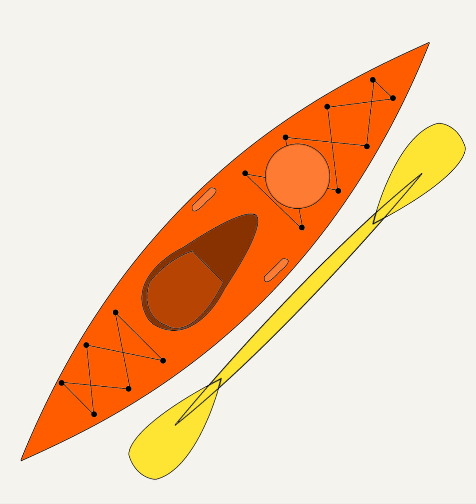

Каяк (Kayak)
Каяк - це вузький і закритий веслувальний човен, де веслувальник сидить обличчям уперед і використовує дволопатеве весло.

Каяк - це вузький і закритий веслувальний човен, де веслувальник сидить обличчям уперед і використовує дволопатеве весло.
